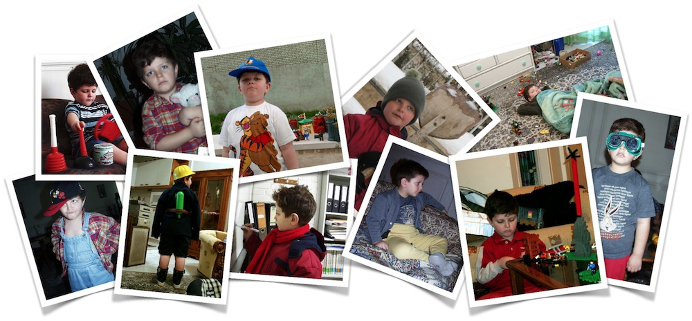

People know me for very different things. Some believe I'm a programming language designer, some remember me from the GNU project, some use the tools I developed for some open source projects, some remember me by my past and the services I used, few know me by the questions I ask, and the questions that I answer, one person in particular thinks I'm a typographer†1, which makes me happy. For myself, I have no idea...

What I can say is: Ever since I was a kiddo, I wanted to be an Inventor. I liked creating really complex systems, fine arts, music, design, algebra, etc. And being an inventor was the only job title where I could combine these things together; the only job where I could be really creative.
These days, I'm on a very diverse range of activities: Some days I create new tools, some days I create new mathematical models, some days I design, some days I compose music, so on and so forth. And that is nighter the definition of an inventor nor an academic researcher but to me it's what I always wanted: Be free to explore my ideas.